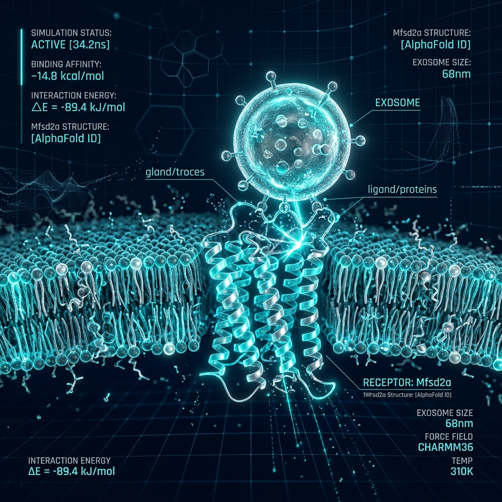

뇌질환 치료의 한계를 넘는
궁극의 패러다임
젭바이오는 버려지는 해양 자원을 업사이클링한 천연 엑소좀과 독보적인 Mfsd2a 셔틀 기술을 결합하여, 단 한 번도 정복되지 않았던 뇌혈관장벽(BBB) 너머로 생명의 희망을 능동적으로 전달합니다.

About Brand
Xepbio. 생명의 숨결을 깨우다
우리의 여정은 버려지는 것에 생명력을 불어넣는 '업사이클링'에서 완성됩니다.
메마른 땅에 생명력을 불어넣는 신성한 서풍처럼 질환으로 고통받는 신체에 회복을 전달합니다.
01 / Zephyrus 서풍 (X): 생명의 바람
제주에서 부는 서풍(하늬바람)은 한라산을 넘는 순간 온화한 기운으로 변모합니다. Xepbio의 ‘X’는 메마른 땅에 생명력을 불어넣는 서풍이자 구원(Christos)의 바람입니다.
02 / Wave 파도: 엑소좀의 탄생
따뜻한 바람이 불어 물보라가 치는 찰나, 그 속에서 보석 같은 입자가 튀어나옵니다. 우리는 청정 제주 해양 자원에서 가장 순수하고 강력한 나노 입자, 엑소좀(Exosome)을 추출해 냅니다.
03 / Science 바람의 길을 설계하다
고성능 GPU 서버를 통한 In-silico 시뮬레이션으로 가장 정확한 침투 경로를 계산합니다. 또한 제주 용암해수 미네랄의 Ionic Shielding 공법으로 그 길을 안전하게 에스코트합니다.

01 / The Key
능동적 BBB 투과 셔틀 구조체
효능 부족이 아닌 도달의 실패. 뇌질환 신약 후보물질의 98%가 부딪히는 그 한계를 우리는 능동형 셔틀 방식으로 허물어냅니다.
1. Mfsd2a 결합 셔틀
뇌혈관장벽(BBB)에 존재하는 핵심영양 수송체(Mfsd2a)와 특이적으로 결합하는 LPC-DHA 나노 구조를 활용하여 약물을 뇌 내부로 완벽히 에스코트합니다.
2. 천연 미네랄 실딩(Shielding)
제주 용암해수 기반 미네랄 쉴딩 기술로 천연 엑소좀의 조기 유출을 차단합니다. 부형제로 인한 전신 독성을 막고 환자 순응도를 획기적으로 올립니다.
02 / In-silico Platform
AI-MD 분자 동역학 디지털 트윈
젭바이오는 고성능 GPU 클러스터를 활용하여, 약물이 뇌혈관장벽(BBB)을 통과하는 복잡한 물리·화학적 메커니즘을 펨토초(10-15초) 단위의 분자 수준에서 가상 시뮬레이션합니다. 이를 통해 파트너사들이 보유한 다양한 약물 후보물질(Cargo)의 침투력을 사전에 검증하고 개발 기간과 비용을 극적으로 단축합니다.

1. 초고속 GROMACS MD 시뮬레이션
뇌혈관장벽(BBB)을 투과하는 LPC-DHA 셔틀과 Mfsd2a 수송체의 능동 결합 구조를 모델링하여 100ns 이상의 분자 안정성 및 자유에너지 데이터를 정밀 분석합니다.
2. Ionic Shielding 가상 모델링
제주 용암해수의 천연 미네랄 보호막 형성 과정을 컴퓨터 시뮬레이션으로 예측하여, 환경 스트레스에 따른 엑소좀의 물리적 탄성과 막 투과 메커니즘을 규명합니다.
03 / Platform & Business
압도적 시장 우위 확보
우리는 자체 신약을 직접 개발하는 리스크를 안지 않습니다. 글로벌 빅파마가 보유한 우수한 뇌질환 치료 물질들을 당사의 BBB 투과 엑소좀에 탑재(Load)하여 전달하는 순수 DDS 플랫폼 라이선싱 비즈니스를 지향합니다.
생산 원가 1/10 혁신
인간 유래 세포 배양의 막대한 비용과 50% 수준의 낮은 정제율 병목을 극복. TFF 기반 여과 시스템으로 고수율 대량 정제 체계를 확립했습니다.
콜드체인 문제 극복
고도의 미네랄 코팅 구조를 통해 기존 엑소좀의 최대 약점이었던 유통상 콜드체인 제약을 극복, 글로벌 확장을 현실화합니다.
파트너십 확장
글로벌 54억 달러 치매 시장을 겨냥하며 혁신 치료제 탑재체(Carrier) 제공자로 빅파마와의 연구를 긴밀히 추진합니다.
UP-CYCLING
04 / ESG Impact
폐기물을 생명의 정수로
참다랑어, 방어 가공 시 발생하는 '어창수'는 매일 수만 톤씩 버려지며 막대한 정화 비용을 초래하는 요인이었습니다.
우리는 이 버려지는 어창수 내에 막대한 양의 천연 엑소좀이 함유되어 있음을 세계 최초로 규명했습니다. 치명적인 환경 오염원을 인류의 뇌를 치료하는 생명의 자원으로 전환하는 완벽한 ESG 밸류를 실현합니다.
05 / Newsroom & R&D
세계적 수준의 학술 증명
바이오-디지털 트윈 기반 네이처 융합 연구 성과 게재
경희대 교수진 기술이전 및 연구·품질 관리 체계 확보
반도체 공정 융합을 통한 전달 플랫폼 관련 세계적 저널 표지 논문 등극
06 / Orbit
젭바이오 Orbit과 대화하기
당사의 핵심 경쟁력, 시장 타겟, 기술 메커니즘을 상세히 답변해 드리는 IR 특화 에이전트입니다.
고비용 엑소좀 한계 극복, Mfsd2a 셔틀 원리, 또는 ESG 환경적 기여 등 궁금하신 내용을 물어보세요.
* Gemini 1.5 Flash 모델 기반 보안 라우팅 시스템 적용 중